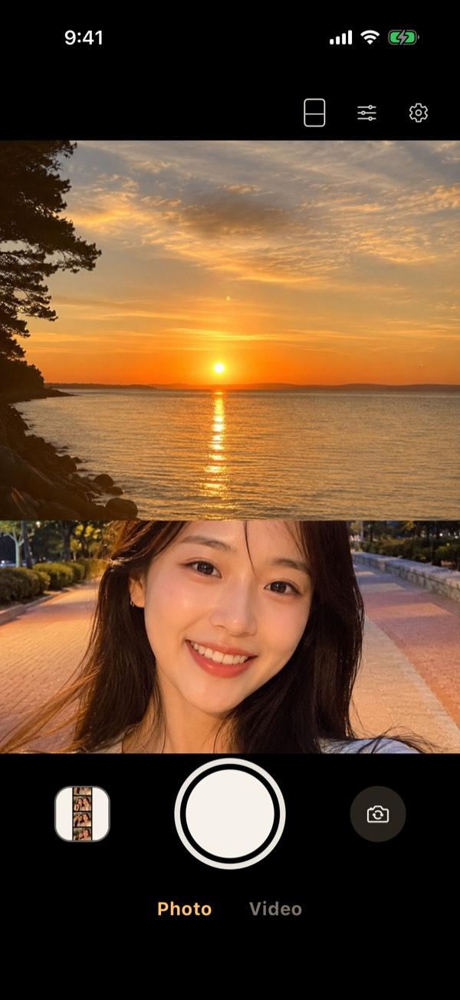
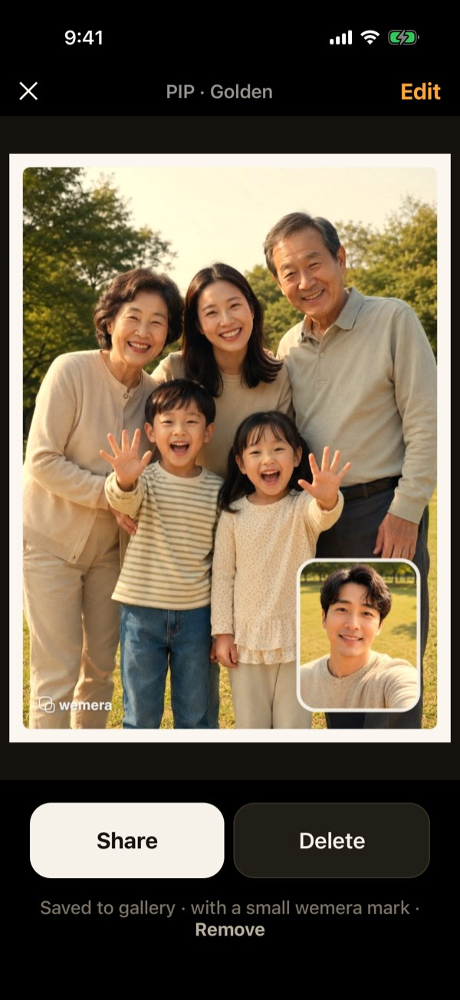
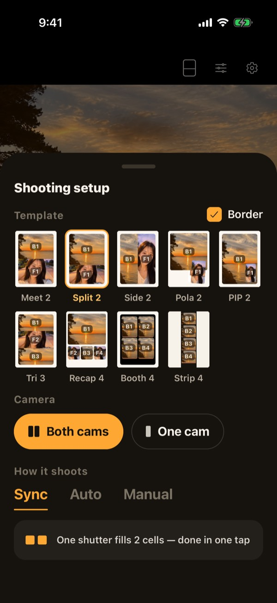
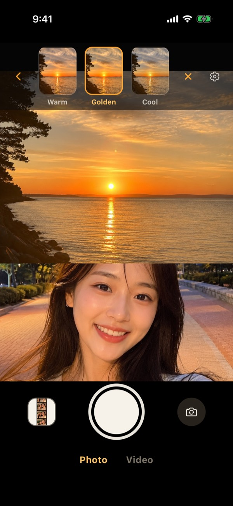
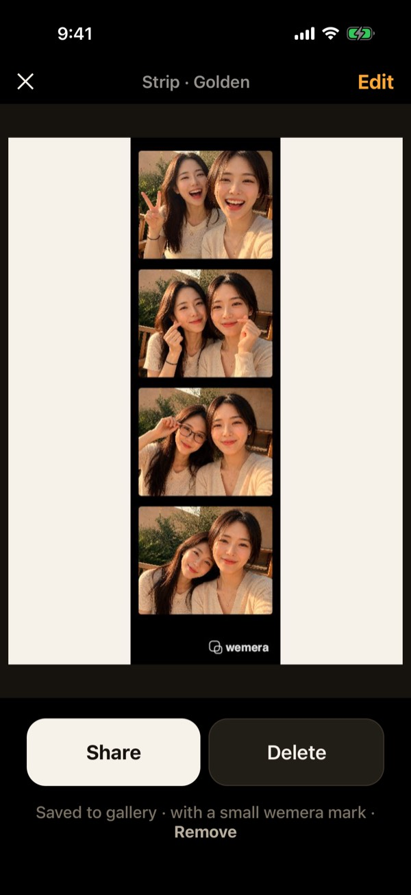

Front & back, at the same moment
The view in front of you and your face, captured at the same moment — in a single photo.

Simultaneous capture
Both lenses fire at the same moment. What you see on the screen is exactly what gets saved.
One shutter · two views · one file
Everyone in frame
You are not missing from your own trip.

Templates
Split, PIP, Polaroid, booth strips, pairs and recaps. Pick one before you shoot — or change it after.

Filters
Front and back are tuned separately, and you see it live on screen before you press the shutter.

Burst
A voice countdown fills the strip, cut by cut.

Made simple
Open and shoot. There is nothing to sign up for.
Photos are processed and saved only on your phone. wemera has no server.
Change the template and the filters on shots you already saved.
Golden Hour
Saved shots carry a small wemera mark.